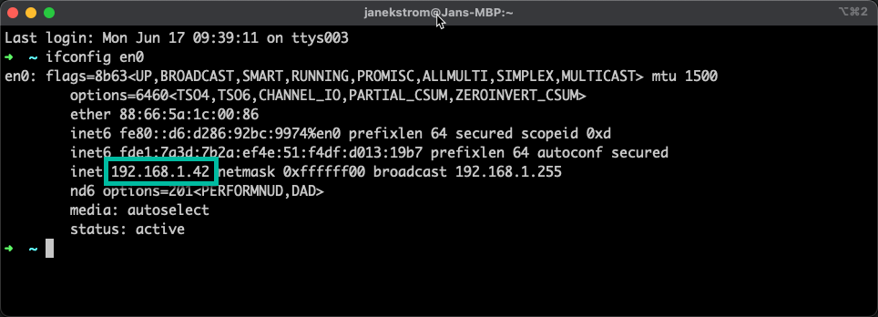
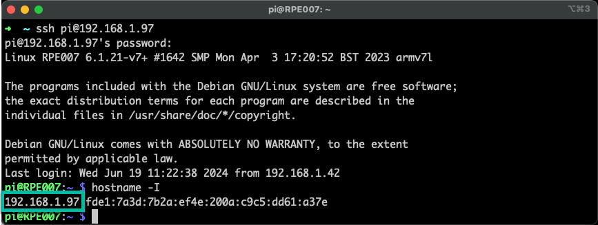
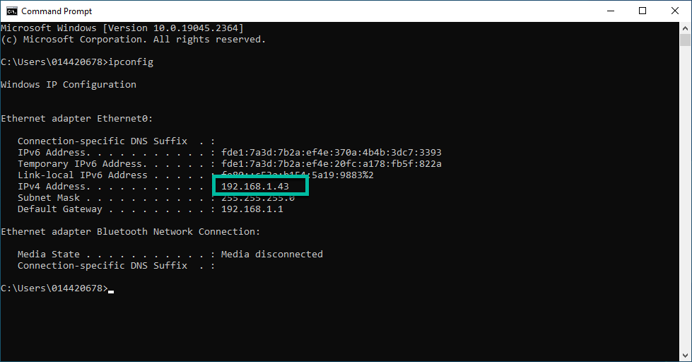

Objectives
In this Exercise you will learn how to:
- Install the Modbus simulator
Before you begin:
This Exercise requires that you have:
- completed the pre-requisites required for all labs
The simulator in this exercice is using the dynamic multi-platform Modbus simulator which you can install by following this lab: IBM Maximo Monitor Modbus Simulator Lab
You need the IP address of the machine where you run the simulator no matter which version you are using. You will need that later.
Get IP Adddress on macOS
Use the following command:
ifconfig en0

Tip
Use ifconfig without any paramter if you don't see the above screen
and then search for a similar IP Address among the other interfaces.
Get IP Adddress on LINUX
Use the following command:
hostname -I

Get IP Adddress on Windows
Use the following command:
ipconfig

Congratulations you have successfully setup the simulator environment.